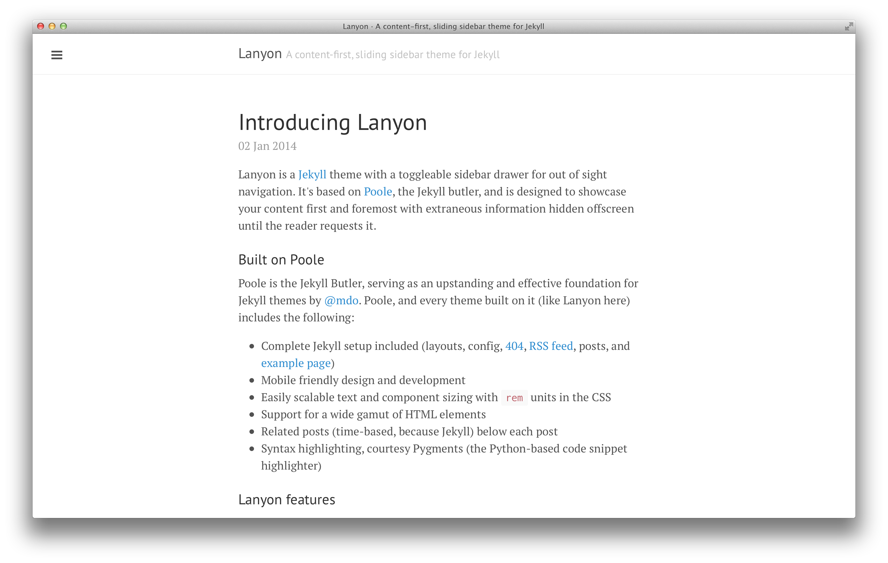
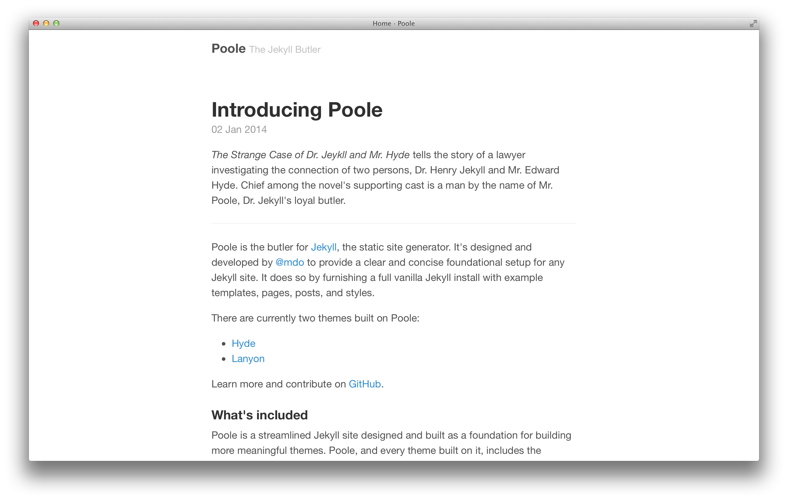
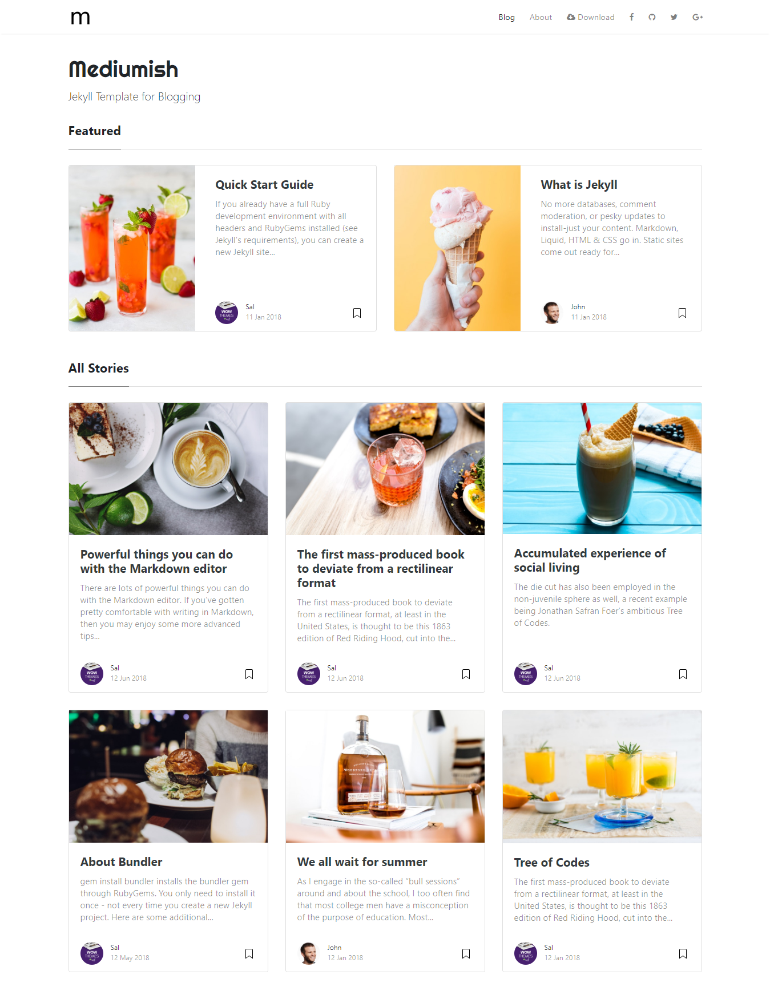

Selecting A Jekyll Theme
November 29, 2024Themes that I looked at with my working notes.
Hydejack
Current as of Nov 2024.
 Hydejack is my current theme (as of Nov 2024). It looks nice, but
Hydejack is my current theme (as of Nov 2024). It looks nice, but
- It has too many bells & whistles - yes, taste changes over time
- I got fed up with the entry page that I have to slide left
Hyde
Being stdied - Hottest candidate

Lanyon
Being studied - Hot candidate


Minimal Theme
Being studied
Cayman
Being studied
Poole
Rejected because I understodd that it’s just a base theme. Hyde and Lanyon are based on it.
 Poole
Celeste
Being studied

Minimal Mistakes
Being studied


Mediumish
Being studied - probably too fancy

al-folio
Rejected b/o too complex.

al-folio looks good - with the picture of Einstein. It looks far less attractive with my face, it has too many areas I don’t need. I played around with it (i.e. created a little personalized demo), and it feels complex.